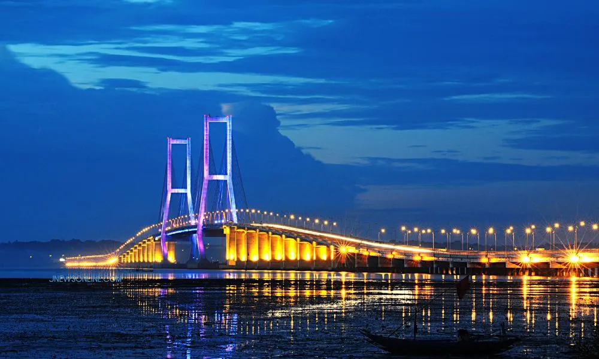

Jembatan Nasional Suramadu
Kemegahan Jembatan Suramadu di malam hari
Sebagai jembatan terpanjang di Indonesia, Suramadu adalah mahakarya arsitektur yang menghubungkan Surabaya dengan Pulau Madura. Tidak hanya menjadi jalur vital, jembatan ini juga menawarkan pemandangan laut yang memukau dan menjadi spot foto ikonik, terutama saat lampu-lampunya menyala di malam hari.
Lihat Fakta & Sejarah Lengkap